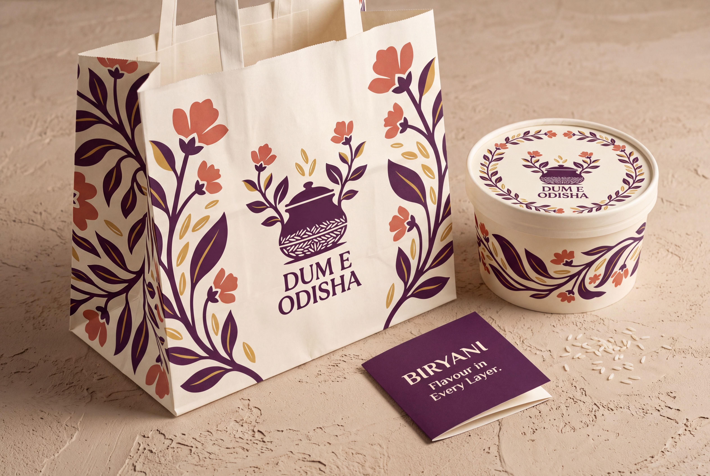

#4D2445Pot, typography and anchor colour
Mughal botanical-inspired · aroma & abundance
Best for a richly illustrated packaging world with a more composed restaurant feel.
A handi grows into a balanced flowering garden. The pot identifies cooking; the rising grains and botanical rhythm suggest layers of aroma.
Brand name: Dum E Odisha.
Tagline: Flavour in Every Layer.
Positioning: A biryani specialist bringing flavour and variety to everyday cravings and shared meals.
Personality: Expressive, composed, abundant.
Concept promise: Aromatic layers, generously served.

Extend the logo’s flower-and-leaf forms into generous botanical borders and large cropped panels. Use a quiet label field so floral detail never competes with dish names.
#4D2445Pot, typography and anchor colour
#CE6B4FFloral accent
#D3A749Rice and leaf accents
#FFF6E7Main background
HEX colours are design targets. Generated raster tones may vary. Use the main colours consistently rather than changing the logo for every biryani flavour.
Softly flared display capitals with a simple sans-serif for menus and order information. The generated lettering is artwork; no exact licensed font match is claimed.
Write the full name Dum E Odisha. Keep Dum and E visibly separate. “Biryani” is a category or product description, outside the brand name.
Voice: simple, welcoming and food-led. Example: “Find your favourite. Share a biryani.” Keep Flavour in Every Layer. as the shared tagline across these concept routes.
Mughal botanical painting is courtly art, rather than a tribal style. This is a modern interpretation of its floral rhythm, with no royal-recipe or historical-lineage claim.